Bring the new grape hyacinth animation into Shot3A and Shot3B
Grape Hyacinth Development
To align with our final deliverable, we need to integrate the AI-stylized output into the texture. I'll integrate the grape hyacinth texture using Itim's AI tool.
According to Yiyi's research with Itim, we found a way to make the grape hyacinth texture more stylized. We started with a manually painted texture in Substance Painter, and then Itim ran the texture through her tool. I then reassigned the texture to the grape hyacinth and painted over it to enhance its brushstroke feel. Finally, we got the stylized texture.
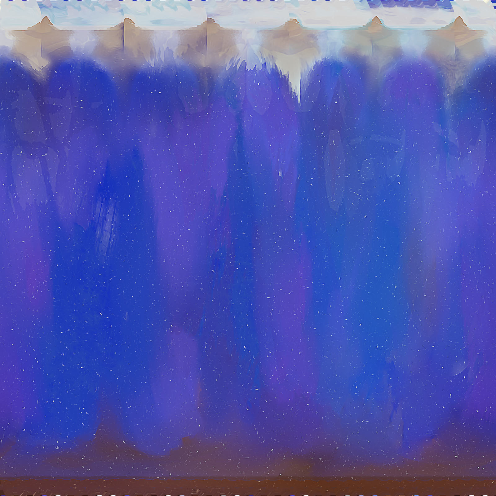
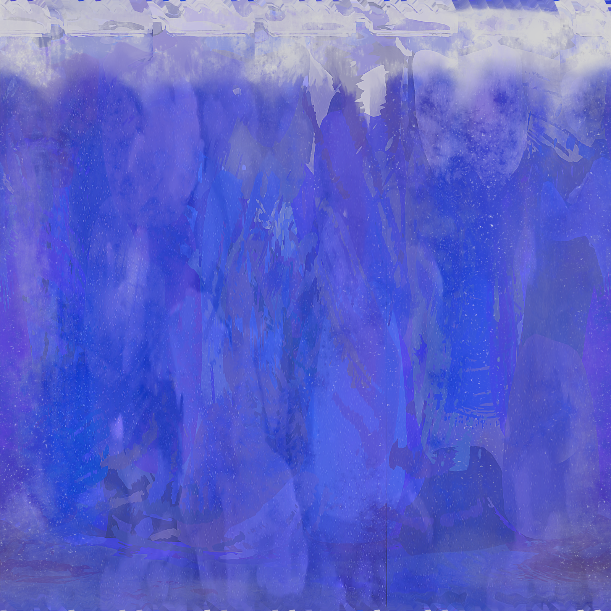
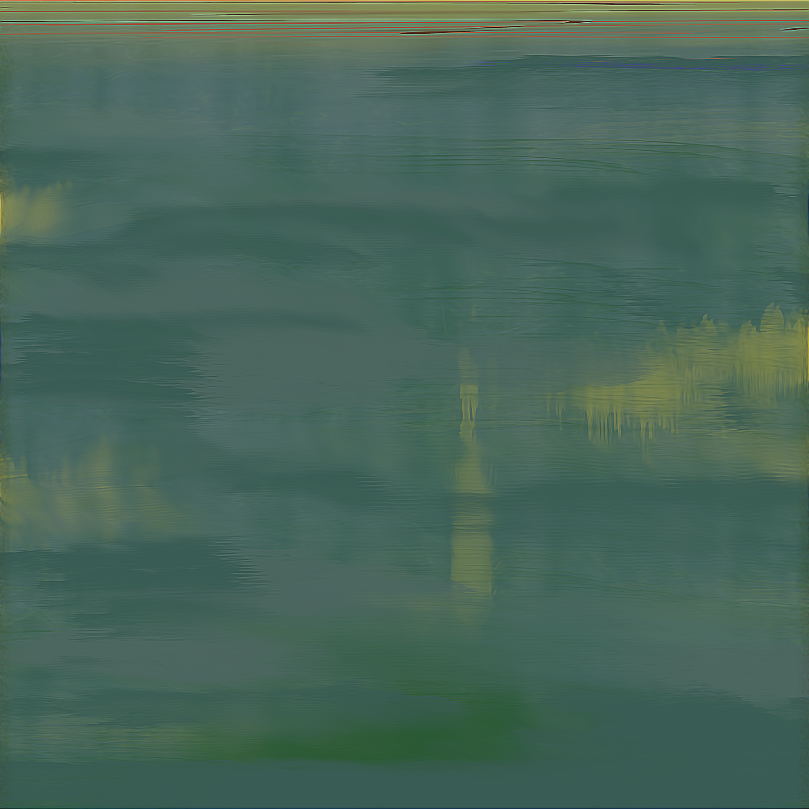
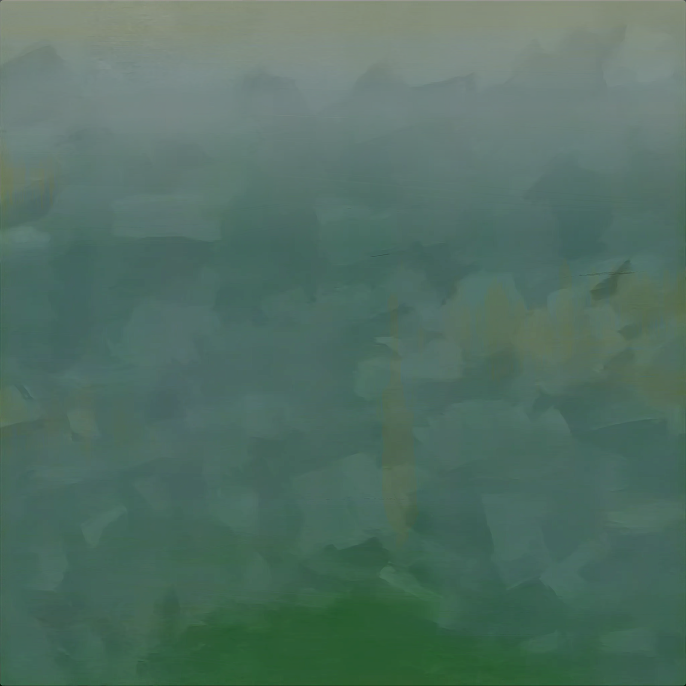
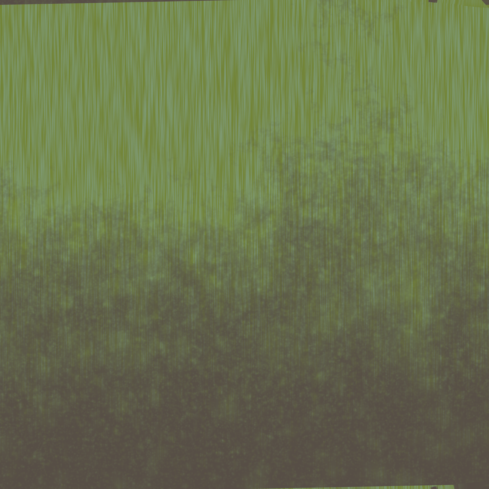
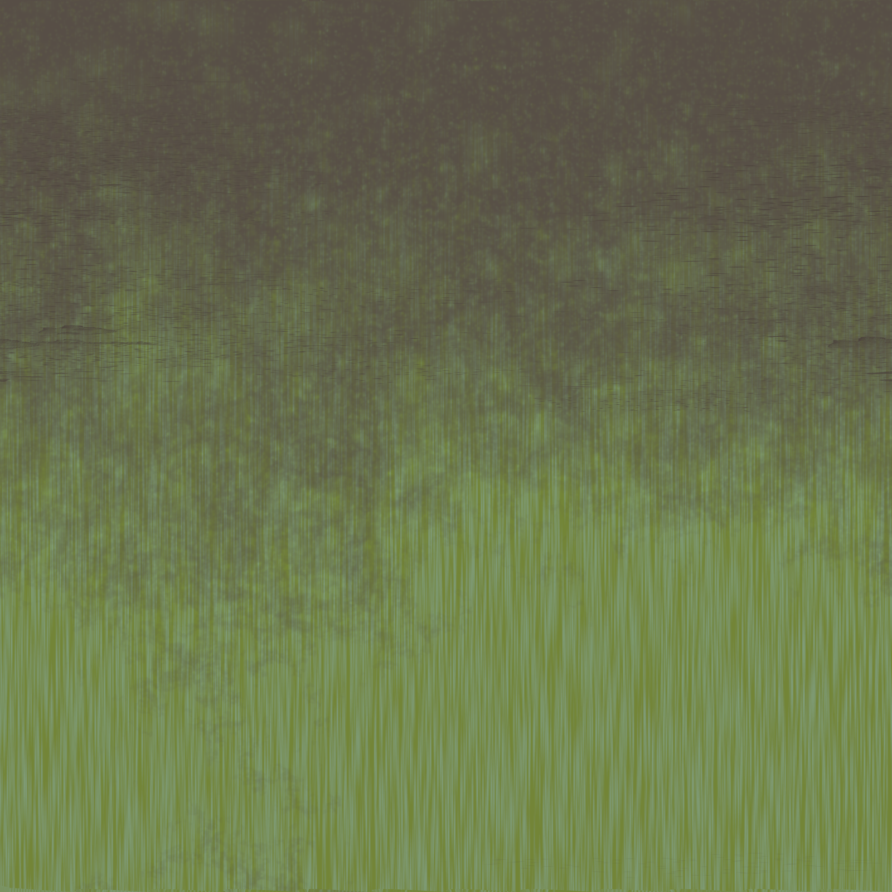
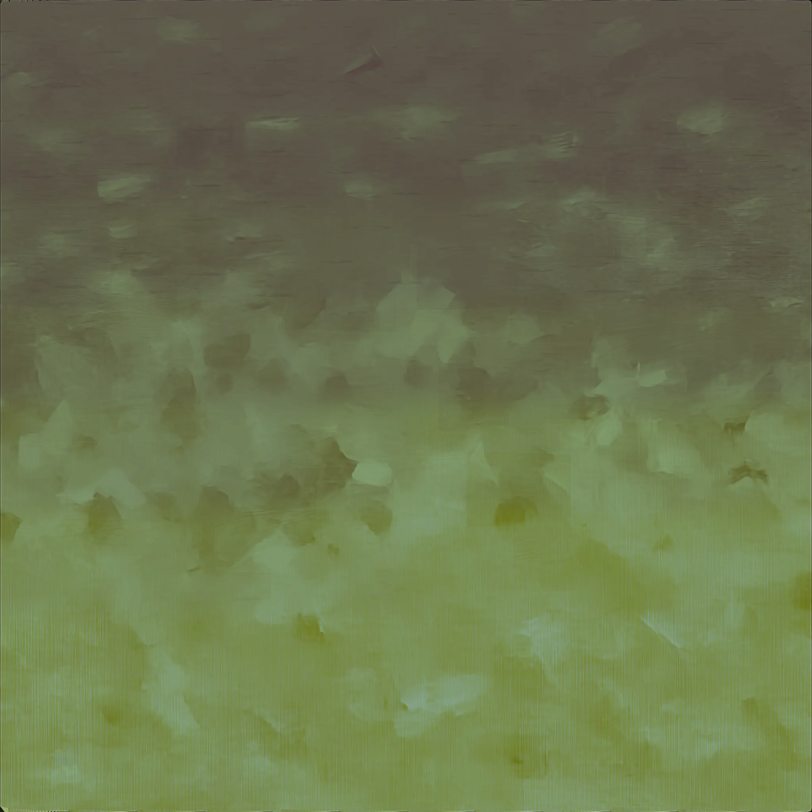
Before stylization
After stylization
This is a comparison between the original textures and the stylized textures.
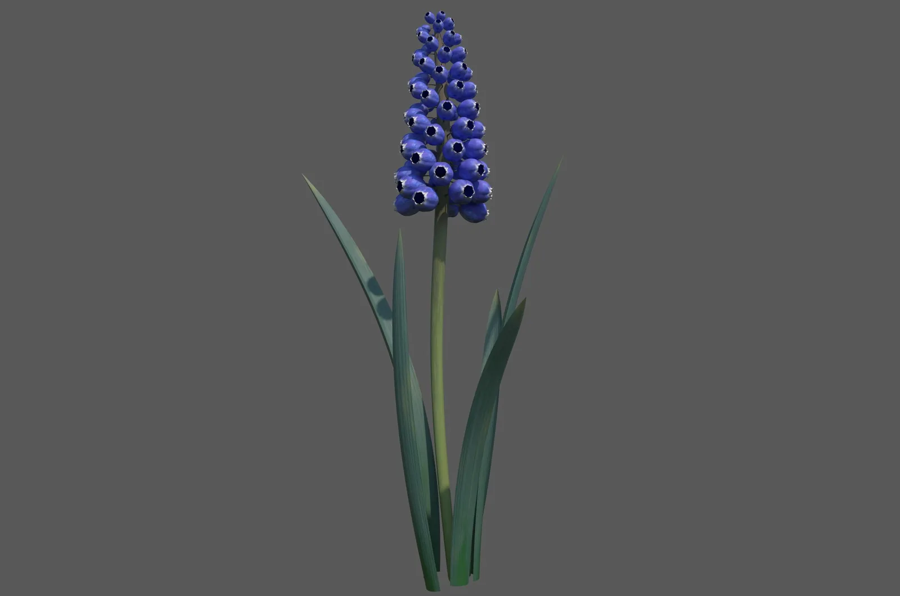
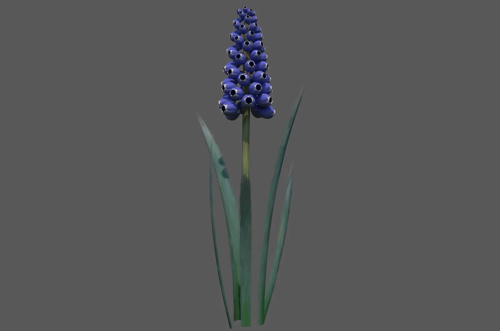
Before stylization
After stylization
And this is the first attempt to bring the stylized texture into Unreal and combine it with the VAT animation.
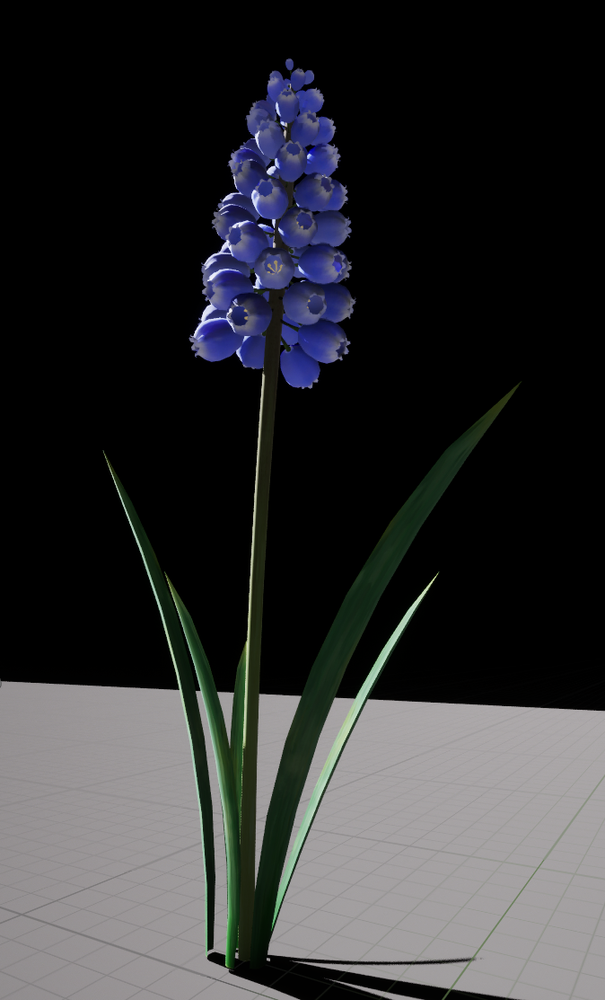
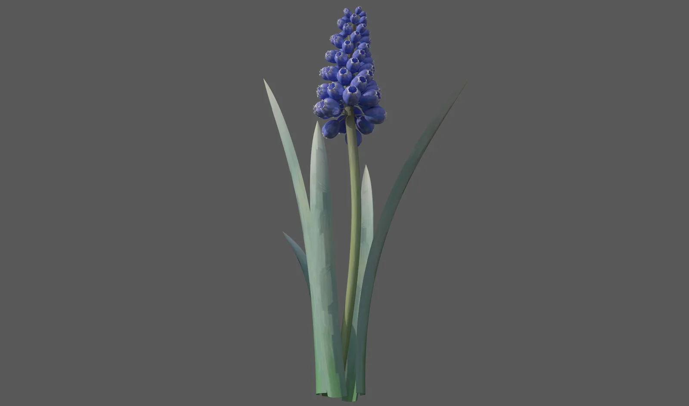
The left side shows how the stylized texture looks in Unreal, and the right side shows how it looks in Substance Painter. I feel like Substance Painter has higher fidelity — the visuals look softer and more natural.
Grape Hyacinth Set Dressing
Due to last quarter, I used PCG to scatter the grape hyacinth, so if put new typology, and PCG will make them have random position, so I manually put the position to match the previous one.